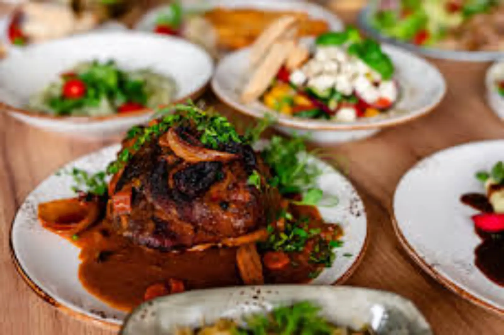

ARTICLE • October 16, 2026
Kashubian Cuisine — Herring, Eel, and Kashubian Broth
Kashubian cuisine is the taste of the sea meeting the forest. Discover what is worth eating in Kashubia — from herring to smoked eel, with specific places and prices.

Kashubian cuisine is a combination of two elements: sea and forest. On one hand, Baltic fish — herring, cod, flounder — on the other, lake fish, mushrooms, berries, and game. The region lies between the Baltic Sea and the Tuchola Forest, so it is no surprise that in Kashubian cuisine salt and forest flavours meet. Add to that Scandinavian and German influences — the Kashubians traded with Gdańsk for centuries, and goods from all over the world flowed through it. The result is one of the most diverse regional cuisines in Poland: fish in every form, groats, mushrooms, game, sourdough bread, and smoked meats.
This guide shows 6 dishes you must try in Kashubia, and specific places in Kartuzy, Kościerzyna, and by the sea where you can eat them in an authentic version.
Fish Dishes
1. Herring in Oil
A classic of Kashubian cuisine and one of the simplest dishes imaginable. Marinated herring, served with onion, oil, and potatoes in their jackets. There are many variations — in sour cream, in vinegar, with mustard, with raisins, even with horseradish. Every Kashubian family has its own recipe, passed down from generation to generation. Herring is a symbol of winter and fasting here — but it is eaten all year round.
Price: 15–25 PLN per portion in fish shops and inns, 8–12 PLN per jar in a fish shop. Where: Smażalnia Rybna Kaszuby (Władysławowo, ul. Portowa 1), Bar Rybny Neptun (Władysławowo, al. Żeromskiego 2), fish shops at Kashubian markets (Kartuzy, Kościerzyna).
2. Smoked Eel
Eel from Kashubian lakes — a delicacy hard to find outside the region. Traditionally smoked in home smokehouses, it has a deep, smoky flavour and delicate texture. It is served cold, with bread and butter, optionally with horseradish or lemon. Eel is expensive — it is one of the most expensive fish in Poland — but worth every złoty. In Kashubia they say that “eel is a fish you remember”. Traditional eel smoking is a craft passed from father to son — still alive in a few Kashubian villages, especially around Lakes Wdzydze and Raduńskie.
Price: 80–120 PLN per kilogram (1 eel is about 0.8–1.5 kg). Where: Gospodarstwo Rybackie Wdzydze, Wędzarnia Ryb Kaszubskich (Chmielno, ul. Gryfa Pomorskiego 12), Wędzarnia Ryb at the market in Kartuzy.
3. Fried Flounder
Flounder is a fish characteristic of the Baltic — flat, tasty, easy to fry. It is served with fries, salad, and lemon. A classic of seaside fish shops, but in the Kashubian version — with local spices and boiled potatoes instead of fries. Flounder has delicate, white meat that does not need many spices — flour, egg, breadcrumbs, and salt are enough. Note: fresh flounder has bright eyes and pink gills. If the eyes are cloudy, the fish is old.
Price: 30–50 PLN per portion (2 flounders with sides). Where: Smażalnia Rybna Kaszuby (Władysławowo), Bar Rybny Neptun (Władysławowo), cutter fish shops in Chałupy, Jastarnia, Kuźnica.
Soups and Bread
4. Kashubian Broth
Chicken broth with the addition of dried mushrooms, with handmade noodles or dumplings. In the Kashubian version — with root vegetables and herbs, and sometimes dried plums, which add a slightly sweet aftertaste. A dish that tastes like home, even if you eat it for the first time in your life. Kashubian broth differs from the classic Polish one in that it is more intense — it is cooked slowly, at least 4 hours, and the addition of mushrooms gives it a deeper, forest aroma. On Sundays in Kashubia, broth is almost mandatory — it is a family dish, not a restaurant one.
Price: 12–20 PLN per bowl. Where: Karczma Kaszubska (Kartuzy, ul. Rynek 18), Kaszubski Dwór (Wdzydze Kiszewskie, ul. Wdzydzka 7), Chata Kaszubska (Chmielno, ul. Krótka 2).
5. Kashubian Fish Soup
A soup based on fish broth with vegetables, potatoes, and spices. It is served with croutons or bread. In the Kashubian version — with sour cream and dill. Perfect for cold days by the sea. The key to a good fish soup is the broth — it is cooked from several species of fish (usually roach, perch, and pike-perch), and only at the end is the main fish added, e.g. cod or eel. In Kashubia, fish soup is sometimes thickened with egg yolk and sour cream, which gives it a creamy consistency.
Price: 15–25 PLN per bowl. Where: Karczma Kaszubska (Kartuzy), Kaszubski Dwór (Wdzydze Kiszewskie), cutter fish shops in Hel.
6. Kashubian Bread
Bread baked on sourdough, with rye and wheat flour. It has a dark colour, deep flavour, and crispy crust. It is served with all dishes — especially with butter and local honey. Kashubian bread differs from other Polish breads in that flaxseed and caraway are added — a remnant of trade with Gdańsk, where spices flowed from all over the world. In many Kashubian villages, bread is still baked in home bread ovens, usually once a week.
Price: 8–15 PLN per loaf. Where: Pieczenia Kaszubska (Kartuzy, ul. Mściwoja II 5), Market in Kościerzyna (Saturday morning), local bakeries in Chmielno, Wdzydze Kiszewskie.
Where to Eat — Specific Places
Kartuzy (centre of Kashubia):
- Karczma Kaszubska (ul. Rynek 18) — a classic of Kashubian cuisine, operating since 2005. Broth, fish, game.
- Restauracja Kaszubski Stół (ul. Jeziorna 8) — Kashubian cuisine in a modern version.
- Bar Mleczny Kaszub (ul. 3 Maja 22) — cheap and authentic regional dishes.
Wdzydze Kiszewskie (open-air museum and lakes):
- Kaszubski Dwór (ul. Wdzydzka 7) — home-style Kashubian cuisine, next to the open-air museum.
- Gospodarstwo Rybackie Wdzydze — smoked fish straight from the lake.
By the sea (Chałupy, Jastarnia, Kuźnica):
- Smażalnia Rybna Kaszuby (Władysławowo, ul. Portowa 1) — a classic fish shop, fish straight from the cutter.
- Bar Rybny Neptun (Władysławowo, al. Żeromskiego 2) — herring, flounder, cod.
- Cutter fish shops in Hel — fish bought directly from fishermen.
Chmielno (lakes and pottery):
- Chata Kaszubska (ul. Krótka 2) — Kashubian cuisine in a family version, next to a pottery workshop.
- Wędzarnia Ryb Kaszubskich (ul. Gryfa Pomorskiego 12) — smoked eel, herring, lake fish.
Practical Tips
- Buy fish in fish shops, not in restaurants on the promenade — in fish shops the fish is fresh and cheaper. Restaurants on the promenade often work from frozen stock.
- Eel is expensive — 80–120 PLN/kg is standard. If someone offers eel for 40 PLN/kg, it is almost certainly not Kashubian eel.
- Herring is best in small fish shops, not in supermarkets. Ask when it was marinated — fresh is best.
- Buy Kashubian bread at the market on Saturday morning — then it is the freshest. On weekdays you can get it in bakeries, but the selection is smaller.
- Order Kashubian broth on Sunday — it is the traditional day. On weekdays it is sometimes served, but not always freshly cooked.
- In the summer season (July–August) fish shops by the sea are very crowded. Go out of season — September is the best month.
Summary
Kashubian cuisine is a combination of sea and forest — fish, mushrooms, groats, and sourdough bread. It is a hearty and diverse cuisine, deeply rooted in the region's tradition. Plan your trip to Kashubia to try at least three dishes: herring, eel, and broth. And if you have time, visit our pages about Kashubian villages and Kashubian Switzerland — there you will find places where the cuisine is still home-style, not touristy.